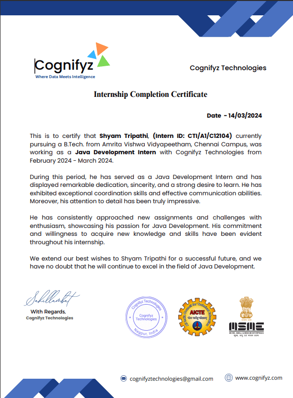

Projects and assignments are not just tasks; they are opportunities for growth, creativity, and learning. Embrace them with enthusiasm, for within each lies the potential to shape your future and enrich your understanding.
1. MyScheme Platform
Working on this project involves designing and implementing a user-friendly platform that breaks down barriers to access government schemes in Tamil Nadu, ensuring residents can easily navigate the system and apply for the assistance they need. By collaborating with stakeholders, developing innovative features, and prioritizing user feedback, we aim to empower individuals and communities to fully utilize the available resources and improve their quality of life.
2. Quiz Game Python GUI
"I take pride in my creation of a Python GUI quiz game, where I've combined my programming skills with user-centric design to deliver an interactive learning experience. By focusing on both frontend appeal and backend functionality, I've developed an intuitive interface and a robust quiz engine, ensuring an enjoyable and educational experience for users."
3. Front-End Demo
This age calculator utilizes frontend development tools such as HTML, CSS, and JavaScript to create a user-friendly interface where users can input their birthdate and get their current age displayed dynamically. Integrated with modern design elements, it offers a visually appealing experience while accurately calculating the age based on the input provided.
4. Connect Four Game in Java
Upon completing the implementation of the Connect Four game using only Object-Oriented Programming (OOP) concepts, I've developed a robust and modular codebase that efficiently models the game logic and interactions, demonstrating a mastery of OOP principles and problem-solving skills in software development.
5. Calcultor Using Python GUI
This Python GUI project implements a calculator application, providing users with a graphical interface for performing basic arithmetic operations such as addition, subtraction, multiplication, and division. It offers a user-friendly experience by allowing input via buttons and displaying results dynamically within the graphical interface."
6. Word Counting GUI in java
This Java GUI project implements a word counting application, allowing users to input text and instantly see the count of words, characters, and sentences displayed in a graphical interface. Utilizing Java Swing or JavaFX, it provides an intuitive user experience with features such as text input fields, buttons, and dynamic result updates for efficient word analysis.
My Achievements
Success is not measured by what you accomplish, but by the obstacles you overcome in achieving your goals.

1. Java Virtual Intership Certificate
After completing the one-month Java virtual internship program with Cognifyz Technologies, I've gained invaluable practical experience and deepened my understanding of Java development, positioning myself as a competent and skilled developer ready to tackle real-world challenges.
2. Java Virtual Intership Certificate
After completing the one-month Java virtual internship program with InternPe, I've gained invaluable practical experience and deepened my understanding of Java development, positioning myself as a competent and skilled developer ready to tackle real-world challenges.
3.Python Virtual Intership Certificate
Having completed the one-month Python GUI virtual programming internship with CodSoft, I've acquired hands-on experience and enhanced my proficiency in Python GUI development, equipping myself with the skills necessary to create interactive and user-friendly graphical interfaces.
About Me
Hello! I'm Shyam, a first-year BTech student at Amrita Vishwa Vidyapeetham, pursuing Computer Science and Engineering with a current SGPA of 8.71. With a background in Science (Computer Science) from Kalika Manavgyan Secondary School, Nepal, and excellent academic achievements, I am passionate about applying my theoretical knowledge in practical settings. Eager to contribute to innovative projects and enhance my skills in Programming, AI development, and machine Learning.
.png)